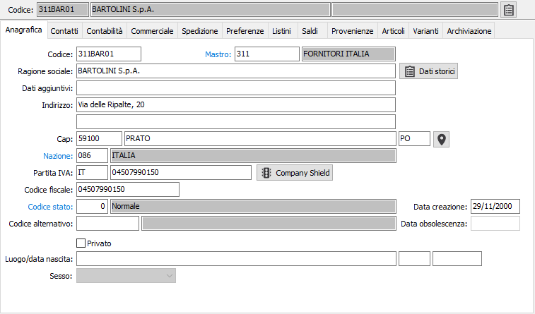

Il pulsante
consente di richiamare la procedura Dati storici
anagrafiche mostrando i dati relativi al codice selezionato se presenti.
Il pulsante
consente di richiamare la procedura Dati storici
anagrafiche mostrando i dati relativi al codice selezionato se presenti.Anagrafica

CODICE: inserire il codice del fornitore. I primi tre caratteri identificano il mastro di appartenenza. Su questo campo è attiva la ricerca (F9) sull’Anagrafica fornitori.
MASTRO: indicare il codice del mastro di appartenenza; deve essere un mastro fornitori.
RAGIONE SOCIALE: campo alfanumerico per inserire la ragione sociale del fornitore.
Il pulsante
consente di richiamare la procedura Dati storici
anagrafiche mostrando i dati relativi al codice selezionato se presenti.
DATI AGGIUNTIVI: campo alfanumerico per inserire il seguito della ragione sociale, nel caso in cui il campo precedente non sia in grado di contenerla completamente.
INDIRIZZO: campo alfanumerico per inserire l'indirizzo del fornitore.
INDIRIZZO AGGIUNTIVO: campo alfanumerico per inserire l’ulteriore specifica dell'indirizzo del fornitore.
C.A.P.: campo alfanumerico per inserire il codice di avviamento postale del fornitore. Sul campo è attiva la ricerca (F9) sulla tabella dei codici di avviamento postale. In questo caso è possibile acquisire attraverso il Cap anche la città e la provincia del fornitore.
CITTÀ: campo alfanumerico per inserire la città del fornitore.
PROVINCIA: campo alfanumerico di due caratteri per indicare la sigla della provincia del fornitore. La provincia è elemento di selezione per le stampe selettive dei clienti. Sul campo è attiva la ricerca (F9) sulla tabella province.
 Il pulsante consente di ricercare le coordinate geografiche
dell'indirizzo completo del fornitore; è necessaria una connessione internet
e viene aperto il browser web utilizzando Google Maps.
Il pulsante consente di ricercare le coordinate geografiche
dell'indirizzo completo del fornitore; è necessaria una connessione internet
e viene aperto il browser web utilizzando Google Maps.
NAZIONE: codice della nazione di appartenenza del fornitore. Se il fornitore dipende da un mastro fornitori Italia, al codice nazione viene assegnato il codice inserito nel campo "Nazione base" della tabella "Configurazione base". In caso contrario, è permesso l'accesso al campo ed è attiva la ricerca (F9) sulla tabella nazioni.
CODICE ISO: contiene il codice Iso della nazione del fornitore, se appartenente alla Comunità Economica Europea. Il valore contenuto in questo campo è forzato dal programma, perché memorizzato sulla tabella nazioni e non è permessa la manutenzione.
PARTITA IVA: campo numerico per contenere la partita Iva del fornitore. Su questo campo viene effettuato il controllo di validità formale della partita Iva e il controllo sull'eventuale esistenza di un altro fornitore con la stessa partita Iva (tipo record + codice Iso + partita Iva), visualizzando il codice relativo.
 Il pulsante consente di richiamare
automaticamente la procedura di Analisi per partita
Iva che, se attivo il servizio Credit Shield ed i campi codice Iso
e partita Iva sono compilati, si pone direttamente nella pagina anagrafica
mostrando i dati presenti; se l'anagrafica è in stato di inserimento/variazione,
nell'analisi sarà presente un pulsante per aggiornare, con i dati che
saranno selezionati, i campi dell'anagrafica, senza effettuarne il salvataggio.
Il pulsante consente di richiamare
automaticamente la procedura di Analisi per partita
Iva che, se attivo il servizio Credit Shield ed i campi codice Iso
e partita Iva sono compilati, si pone direttamente nella pagina anagrafica
mostrando i dati presenti; se l'anagrafica è in stato di inserimento/variazione,
nell'analisi sarà presente un pulsante per aggiornare, con i dati che
saranno selezionati, i campi dell'anagrafica, senza effettuarne il salvataggio.
CODICE FISCALE: campo alfanumerico per contenere il codice fiscale del fornitore. Su questo campo viene effettuato il controllo di validità formale. Al salvataggio del fornitore se è spuntato il flag Privato ed i campi "data di nascita", "Provincia di nascita", "Comune di nascita", "Sesso" e "Ragione sociale" sono tutti compilati; per il percepente se "Persona fisica" anche il campo "Dati aggiuntivi" ed è presente il codice fiscale viene effettuato un controllo di coerenza con il codice fiscale calcolato dalla procedura e quello già presente altrimenti, se vuoto il campo, viene assegnato in automatico. Per calcolare il codice fiscale viene ricercato il nome e cognome utilizzando questo procedimento: se il campo "Dati aggiuntivi" è compilato viene assunto come nome (da usare se si ha più di un nome) e la ragione sociale come cognome, altrimenti nella ragione sociale viene cercato lo spazio più a destra la parte a sinistra è il cognome e la parte a destra il nome. Il codice del comune viene ricercato nella relativa tabella Comuni per descrizione e provincia. Non sono gestiti i casi di omocodia.
CODICE STATO: codice della tabella Stato conti che identifica lo stato del fornitore. Sul campo è attiva la ricerca (F9) sulla tabella stessa.
CODICE ALTERNATIVO: campo codice in cui può essere memorizzato un codice fornitore sostitutivo di quello in esame se lo stato anagrafica del cliente attivo è uguale a bloccato. Su questo campo è attiva la ricerca (F9) sulla tabella Anagrafica fornitori.
DATA CREAZIONE: indica la data in cui è stato inserito il fornitore; viene proposta in automatico in inserimento nuovo fornitore.
DATA OBSOLESCENZA: indica la data in cui è stato modificato lo stato del fornitore come obsoleto; viene proposta in automatico in caso di assegnazione dello stato ad obsoleto.
PRIVATO: identifica se si tratta di un privato (casella con segno di spunta).
LUOGO/DATA NASCITA - SESSO: indicare i dati relativi al fornitore di tipo privato.